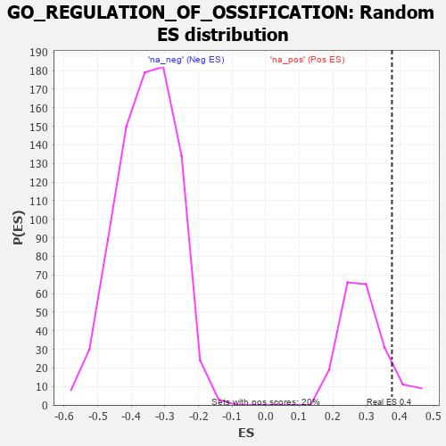

| | | Dataset | 7d |
| Phenotype | NoPhenotypeAvailable |
| Upregulated in class | na_pos |
| GeneSet | GO_REGULATION_OF_OSSIFICATION |
| Enrichment Score (ES) | 0.37616542 |
| Normalized Enrichment Score (NES) | 1.2866635 |
| Nominal p-value | 0.11442786 |
| FDR q-value | 0.41538617 |
| FWER p-Value | 1.0 |
Table: GSEA Results Summary
 Fig 1: Enrichment plot: GO_REGULATION_OF_OSSIFICATION
Fig 1: Enrichment plot: GO_REGULATION_OF_OSSIFICATION
Profile of the Running ES Score & Positions of GeneSet Members on the Rank Ordered List
| PROBE | GENE SYMBOL | GENE_TITLE | RANK IN GENE LIST | RANK METRIC SCORE | RUNNING ES | CORE ENRICHMENT | | 1 | SIX2 | | | 40 | 3.152 | 0.1292 | Yes |
| 2 | TGFB3 | | | 49 | 2.654 | 0.2411 | Yes |
| 3 | RORB | | | 189 | 1.097 | 0.2703 | Yes |
| 4 | SMAD5 | | | 231 | 0.979 | 0.3068 | Yes |
| 5 | HGF | | | 276 | 0.870 | 0.3383 | Yes |
| 6 | AXIN2 | | | 383 | 0.713 | 0.3553 | Yes |
| 7 | SUFU | | | 443 | 0.665 | 0.3762 | Yes |
| 8 | ID1 | | | 719 | 0.555 | 0.3651 | No |
| 9 | MEN1 | | | 1003 | 0.483 | 0.3500 | No |
| 10 | MEF2C | | | 1054 | 0.473 | 0.3638 | No |
| 11 | NOCT | | | 1402 | 0.409 | 0.3375 | No |
| 12 | LRP5 | | | 1769 | 0.342 | 0.3059 | No |
| 13 | BMP7 | | | 2107 | 0.290 | 0.2758 | No |
| 14 | REST | | | 2308 | 0.259 | 0.2616 | No |
| 15 | ANO6 | | | 2339 | 0.255 | 0.2686 | No |
| 16 | FGFR2 | | | 2895 | 0.167 | 0.2058 | No |
| 17 | ACVR1 | | | 2932 | 0.161 | 0.2081 | No |
| 18 | WNT4 | | | 3023 | 0.146 | 0.2030 | No |
| 19 | SMAD3 | | | 3303 | 0.105 | 0.1723 | No |
| 20 | SMAD1 | | | 3337 | 0.099 | 0.1723 | No |
| 21 | SMAD7 | | | 3369 | 0.093 | 0.1724 | No |
| 22 | GLI1 | | | 3489 | 0.079 | 0.1607 | No |
| 23 | NELL1 | | | 3538 | 0.070 | 0.1577 | No |
| 24 | MAPK3 | | | 3589 | 0.062 | 0.1540 | No |
| 25 | SKI | | | 3762 | 0.032 | 0.1337 | No |
| 26 | SUCO | | | 3816 | 0.025 | 0.1281 | No |
| 27 | NIPBL | | | 3900 | 0.010 | 0.1180 | No |
| 28 | SFRP2 | | | 4065 | -0.018 | 0.0981 | No |
| 29 | CSF1 | | | 4074 | -0.019 | 0.0980 | No |
| 30 | ADRB2 | | | 4352 | -0.068 | 0.0659 | No |
| 31 | ILK | | | 4510 | -0.096 | 0.0502 | No |
| 32 | TOB2 | | | 5337 | -0.282 | -0.0419 | No |
| 33 | JAG1 | | | 6060 | -0.494 | -0.1119 | No |
| 34 | ISG15 | | | 6385 | -0.608 | -0.1269 | No |
| 35 | TRPM4 | | | 6390 | -0.612 | -0.1013 | No |
| 36 | DDR2 | | | 6542 | -0.681 | -0.0914 | No |
| 37 | DDX5 | | | 7152 | -1.037 | -0.1240 | No |
| 38 | MSX2 | | | 7299 | -1.171 | -0.0926 | No |
| 39 | TPH1 | | | 7416 | -1.286 | -0.0525 | No |
| 40 | FBN2 | | | 7906 | -2.873 | 0.0082 | No |
Table: GSEA details [plain text format]

Fig 2: GO_REGULATION_OF_OSSIFICATION: Random ES distribution
Gene set null distribution of ES for GO_REGULATION_OF_OSSIFICATION